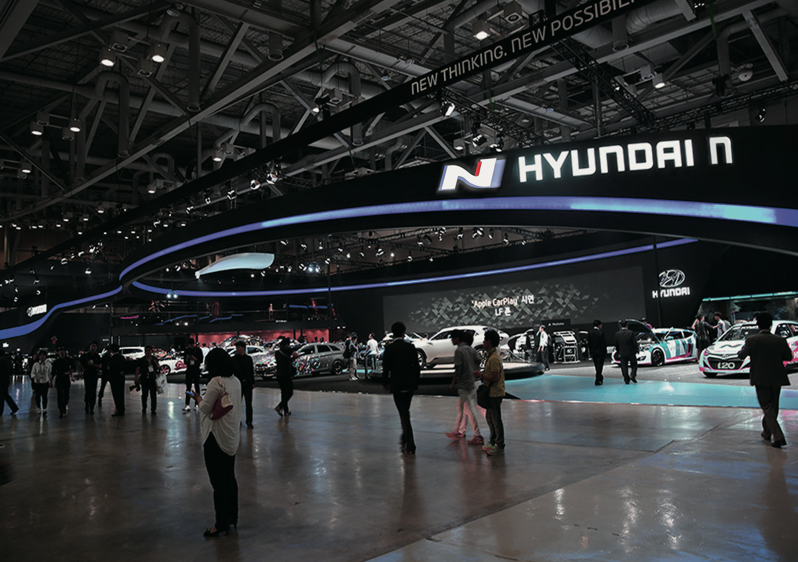
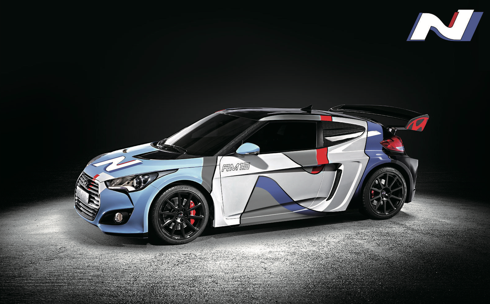
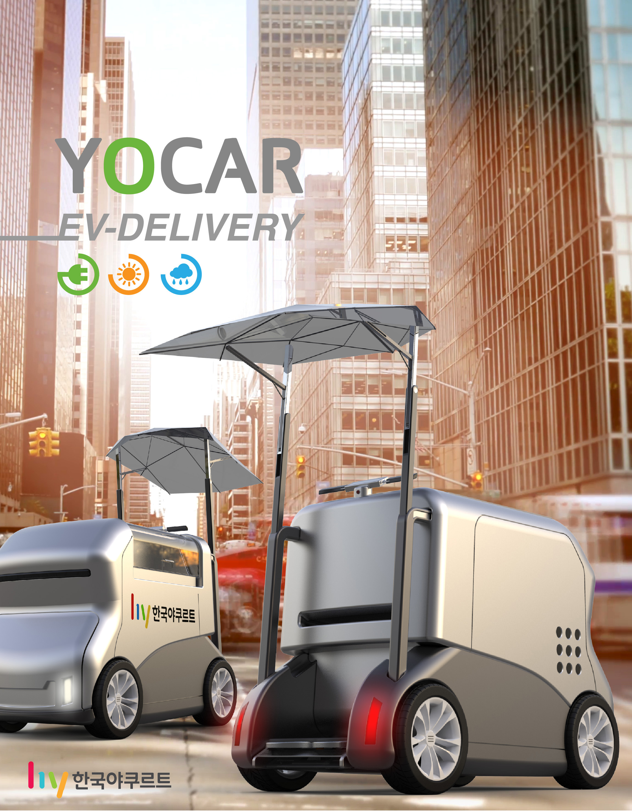
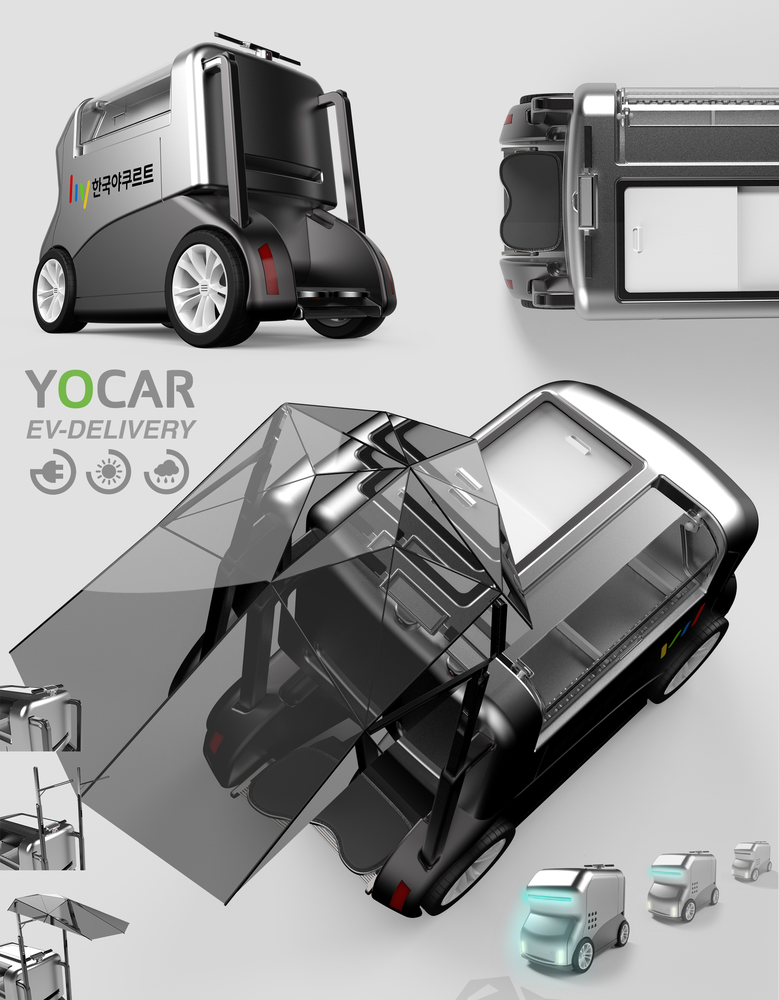
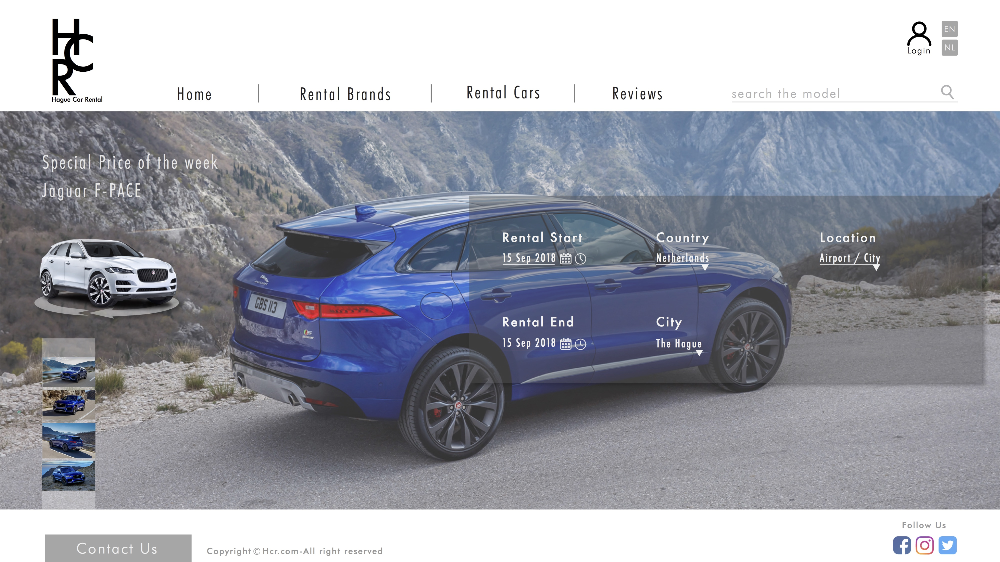
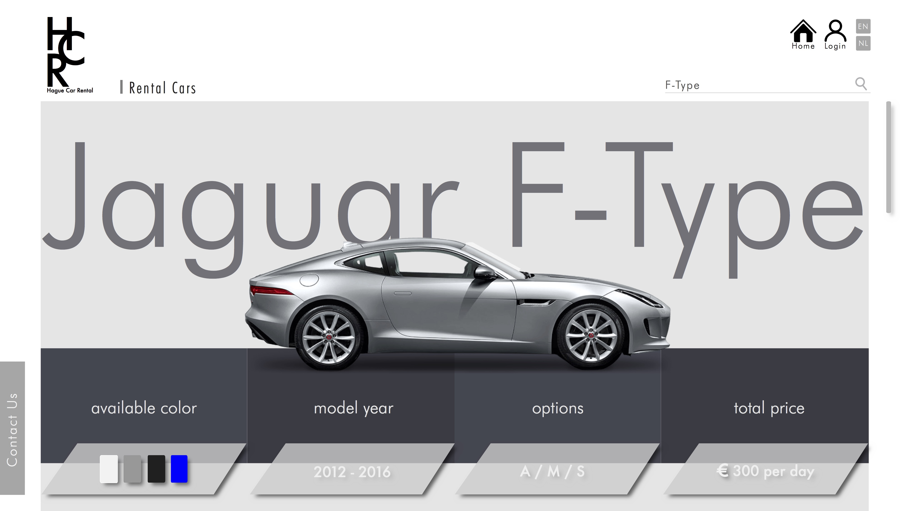
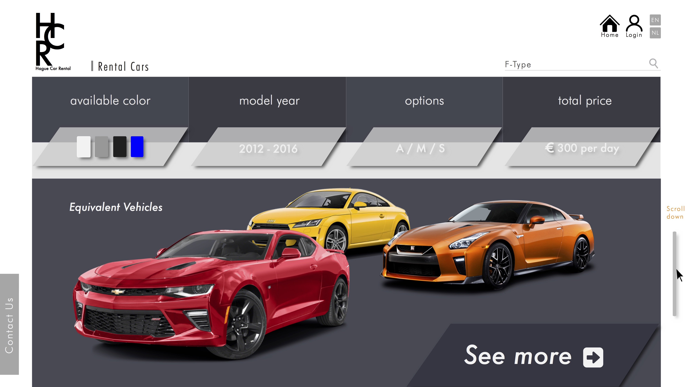
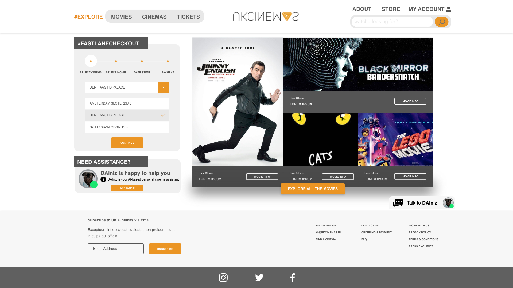
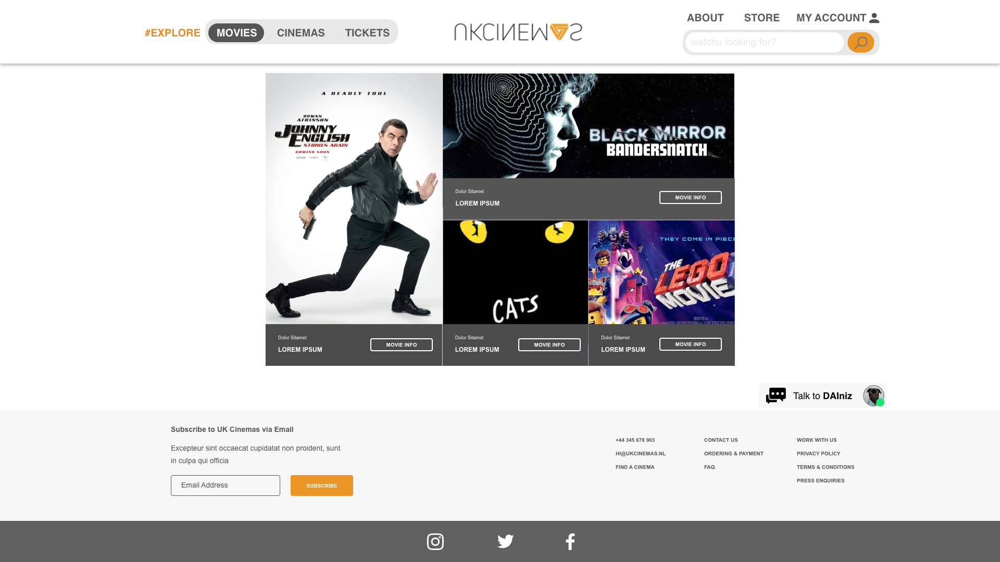
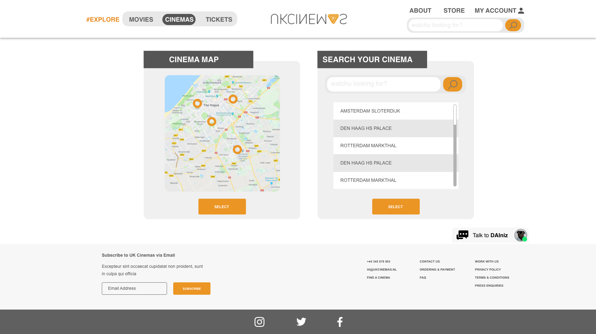

My Works
Hyundai Logo Renewal Project
Renewal the logo of Hyundai 'N' based on CMF research[Team]
March 2017 - June 2017




YOCAR
Yakult EV Delivery Cart[Team]
Mar 2018 - July 2018


UXD Projects
Web Design
HCR: Hague Car Rental sevice website[Individual]
Sept 2018 - Nov 2018



Interaction Design
NAISUX: UK Cinemas Website[Team]
Nov 2018 - Jan 2019



Education
Claude Watson Secondary Arts - Toronto, ON
Visual Arts Major, 2010-2012
Find more at CWSA Website.
University of Seoul - Seoul, South Korea
Industrial Design Major, 2016-Present
Double Major in teaching profession
Find more at UOS Website.
The Hague University of Applied Science - The Hague, Netherland
UX Design Major, 2018-2019
Find more at THUAS Website.